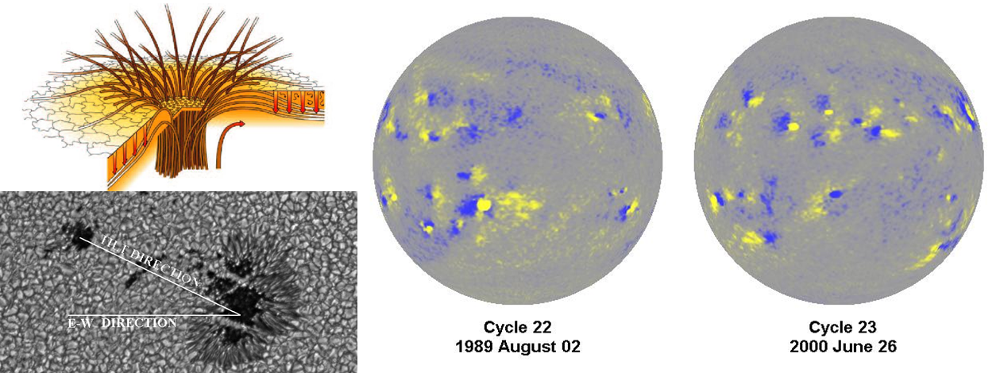

Active regions are areas on the Sun with very strong magnetic fields (several thousand times stronger than the Earth's magnetic field). Sunspots ("black" spots on the surface of the Sun) mark the places where the magnetic field is strong enough to hold back the plasma flows that transport heat from the interior. Sunspots were the first features to be observed on the Sun. Observations of the sunspots in active regions have revealed several characteristics that are important to understanding the physical mechanisms of the solar activity cycle. Sunspots were used to determine that the Sun rotates in about 27 days (a Carrington Rotation is 27.2753 days synodic). The sunspots in active regions usually occur in two groups stretched out or even separated in longitude. The leading group has one magnetic polarity and the following group has the opposite polarity. Active regions also tend to follow Joy’s Law, which says that the line connecting the leading and following groups has a tilt that increases with latitude and is such that the leading spots are closer to the equator than the following spots. The leading sunspot groups in the northern hemisphere also tend to have opposite polarity to those in the south, and these polarities flip from cycle to cycle. This effect is known as Hale’s Polarity Law. In the 1800s astronomers realized that the sunspot number was cyclic, with a period averaging about 11 years.

Sunspots. a) Sunspots are formed when magnetic field lines emerge through the photosphere. b) Sunspot groups possess a characteristic tilt, known as Joys Law. c) Sunspot groups have opposite polarity from north to south and polarity changes from cycle to cycle. This is known as Hales Polarity Law.
Discover the AR Observations!
The Royal Greenwich Observatory (RGO) compiled sunspot observations from a small network of observatories to produce a dataset of daily observations starting in May of 1874. The observatory concluded this dataset in 1976 after the US Air Force (USAF) started compiling data from its own Solar Optical Observing Network (SOON). This work was continued with the help of the US National Oceanic and Atmospheric Administration (NOAA) with much of the same information being compiled through to the present. Unfortunately, the more recent data is given in a different format from the original and there are definite changes in the reported parameters from the different sources. In an effort to append the RGO data with the more recent data David Hathaway has reformated the USAF and NOAA data to conform to the older RGO data format. The entire dataset is available below as ASCII text files containing records for individual years. Each file consists of records with information on individual sunspot groups for each day that spots were observed.
Careful inspection of the data indicates that quantities such as sunspot area are not uniform across datasets or even within a given dataset. For example, the ratio of the umbral areas (the darker part of the sunspot) to total spot area (including the lighter penumbra) changes abruptly in 1941/1942 and the ratio of the total sunspot area to the sunspot number changes dramatically with the start of the USAF/NOAA data. In an effort to correct for these variations I have compared this data with the more uniform data compiled by Howard, Gilman, and Gilman (ApJ 283, 373, 1984) for the Mount Wilson photographic plate collection from 1917 to 1982. This comparison shows three epochs for the reported sunspot areas: for 1917-1941 Mt. Wilson Umbral Area = 0.35 RGO Umbral Area and Mt. Wilson Spot Area = 0.067 RGO Spot Area; for 1942-1968 Mt. Wilson Umbral Area = 0.41 RGO Umbral Area and Mt. Wilson Spot Area = 0.067 RGO Spot Area; for 1969-1981 Mt. Wilson Umbral Area = 0.59 RGO/USAF/NOAA Umbral Area and Mt. Wilson Spot Area = 0.094 RGO/USAF/NOAA Spot Area.
In producing the butterfly diagram (86 kb png) (showing total sunspot area as a function of time and latitude) David Hathaway has retained the RGO Spot Areas prior to 1977 as reported but increased the USAF/NOAA Spot Areas by a factor of 1.4 after 1976. The data plotted in the Butterfly Diagram is contained in a (453KB ASCII text file) with a single record containing the Carrington rotation number followed by five records containing 10 values each of the total sunspot area (in units of millionths of a hemisphere) found in 50 latitude bins distributed uniformly in Sine(latitude).
Discover the AR Database!
This section contains the yearly RGO and USAF/NOAA data files. A list of corrections and updates to this database are shown in the following section.
The data format is given in a text file. The series of data files from 1874-2024 are also available in a single 5 Mb ZIP file. Text files containing the monthly averages of the daily sunspot areas (again in units of millionths of a hemisphere) are also available for the full sun, the northern hemisphere, and the southern hemisphere. Another text file contains (daily sunspot areas) (1.51 Mb). These derived data include the correction factor of 1.4 for data after 1976. The missing days within the dataset are indicated by sunspot area values of -1 in the daily sunspot area file. The yearly RGO and USAF/NOAA data files are here:
2025/08/17 - A zip file containing the data from 1874 through 2024 has been added with the corrected (2017/06/05) data files. The previous zip file did not include the corrected files. [Thanks to Jayalekshmi for catching this.]
2017/06/05 - 1) Database corrections to date/time for 1982-present. Previous date/times were off by a half a day. Times were changed from 0.500 days to 0.000 days and dates were incremented by one day. 2) Columns 26-29 now contain the Zurich/McIntosh sunspot group classifications (instead of zeros for lack of umbral area information). 3) Columns 36-39 now contain the number of sunspots in the group (instead of zeros for lack of umbral area information). The revised format is contained in the format.txt file.
2012/08/02 - Yearly data files g2005.txt, g2006.txt, g2007.txt, and g2008.txt have been rewritten to correct a formatting error caught by Andrey Tlatov.
2012/04/02 - This database saw significant revisions. Over 120 days in which sunspots should have been observed do not have records and are now noted as missing days through the inclusion of records with year, month, and day but all other columns zeroed out in the raw data files (gYYYY.txt). The missing days are also enumerated in a file: MissingDays.txt. Accounting for these missing days, as well as the variation between 27 and 28 days in a Carrington Rotation, has also slightly changed the monthly sunspot area calculations and the values used in making the Butterfly diagram.
2012/04/02 - Another change is the deletion of data on sunspot umbral areas from 1977 to 1981. It is now clear that these numbers were fabricated using a model for the ratio of the umbral area to the whole spot area that has significant flaws. Also, Giuliana de Toma noted that the corrected and uncorrected whole spot areas were in disagreement starting in 1982. Starting in 1982 the corrected areas were the primary data and the uncorrected areas were calculated using the sunspot group distance from disk center. These values are now properly calculated. Please note that, as before, the data in the raw data files (gYYYY.txt) are uncorrected for the change in data source in 1977. The derived data (daily_area.txt, sunspot_area.txt, sunspot_area_north.txt, sunspot_area_south.txt, and bflydata.txt) do include the correction factor of 1.4x after 1976/12/31.
2025/10/02 - Recent work on the NOAA Solar Region Summaries page has no entries for 2025/08/34, 2025/08/24, and 2025/08/29. Our database entries for those days were constructed by interpolation from adjacent day data.
 Solar Cycle Science Discover the Sun!
Solar Cycle Science Discover the Sun!{kind=link}